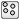

Library of functions generating uniform random numbers in the range 0 < random <= 1.0 (with exposed state vectors)
Information
This package contains various pseudo random number generators. A random number generator is a package
that consists of the following elements:
- Integer nState is a constant that defines the length of the internal state vector
(in order that an appropriate Integer vector of this length can be declared, depending on
the selected random number generator).
- Function initialState(..) is used to initialize the state of the random number generator
by providing Integer seeds and calling the random number generator often enough that
statistically relevant random numbers are returned by every call of function random(..).
- Function random(..) is used to return a random number of type Real in the range
0.0 < random ≤ 1.0 for every call.
Furthermore, the updated (internal) state of the random number generator is returned as well.
The Generators package contains the xorshift suite of random number generators
from Sebastiano Vigna (from 2014; based on work of George Marsaglia).
The properties of these random
number generators are summarized below and compared with the often used
Mersenne Twister (MT19937-64) generator. The table is based on
http://xorshift.di.unimi.it/ and on the
articles:
Sebastiano Vigna:
An experimental exploration of Marsaglia's xorshift generators, scrambled, 2014.
Sebastiano Vigna:
Further scramblings of Marsaglia's xorshift generators, 2014.
Summary of the properties of the random number generators:
| Property |
xorshift64* |
xorshift128+ |
xorshift1024* |
MT19937-64 |
|---|
| Period |
2^64 |
2^128 |
2^1024 |
2^19937 |
| Length of state (# 32 bit integer) |
2 |
4 |
33 |
624 |
| Statistic failures (Big Crush) |
363 |
64 |
51 |
516 |
| Systematic failures (Big Crush) |
yes |
no |
no |
yes |
| Worst case startup |
> 1 call |
> 20 calls |
> 100 calls |
> 100000 calls |
| Run time (MT=1.0) |
0.39 |
0.27 |
0.33 |
1.0 |
Further explanations of the properties above:
- The period defines the number of random numbers generated
before the sequence begins to repeat itself. According to
"A long period does not imply high quality"
a period of 2^1024 is by far large enough for even massively parallel simulations
with huge number of random number computations per simulation.
A period of 2^128 might be not enough for massively parallel simulations.
- Length of state (# 32 bit integer) defines the number of "int" (that is Modelica Integer) elements
used for the internal state vector.
- Big Crush is part of TestU01
a huge framework for testing random number generators.
According to these tests, the statistical properties of the xorshift random number
generators are better than the ones of the Mersenne Twister random number generator.
- Worst case startup means how many calls are needed until getting
from a bad seed to random numbers with appropriate statistical properties.
Here, the xorshift random number suite has much better properties
than the Mersenne Twister. When initializing a random number generator, the above property
is taken into account and appropriate random numbers are generated, so that a subsequent
call of random(..) will generate statistically relevant random numbers, even if the user
provides a bad initial seed (such as localSeed=1). This means, any Integer number can be given as
initial seed without influencing the quality of the generated random numbers.
- Run time shows that the xorshift random number generators are
all much faster than the Mersenne Twister random number generator, although
this is not really relevant for most simulations, because the execution
time of the other parts of the simulations is usually much larger.
The xorshift random number generators are used in the following way in the
Blocks.Noise package:
- Xorshift64star (xorshift64*) is used to generate the initial internal state vectors of the
other generators from two Integer values, due
to the very good startup properties.
- Xorshift128plus (xorshift128+) is the random number generator
used by the blocks in Blocks.Noise.
Since these blocks hold the internal state vector for every block instance, and the
internal state vector is copied whenever a new random number is drawn, it is important
that the internal state vector is short (and still has good statistical properties
as shown in the table above).
- Xorshift1024star (xorshift1024*) is the basis of the impure function
Math.Random.Utilities.impureRandom
which in turn is used with
Blocks.Noise.GlobalSeed.
The internal state vector is not exposed. It is updated internally, whenever a new random number
is drawn.
Note, the generators produce 64 bit random numbers.
These numbers are mapped to the 52 bit mantissa of double numbers in the range 0.0 .. 1.0.
Extends from Modelica.Icons.Package (Icon for standard packages).
Package Content
| Name |
Description |
| Xorshift64star
|
Random number generator xorshift64* |
| Xorshift128plus
|
Random number generator xorshift128+ |
|  Xorshift1024star
|
Random number generator xorshift1024* |
Automatically generated Tue Feb 24 16:59:32 2026.